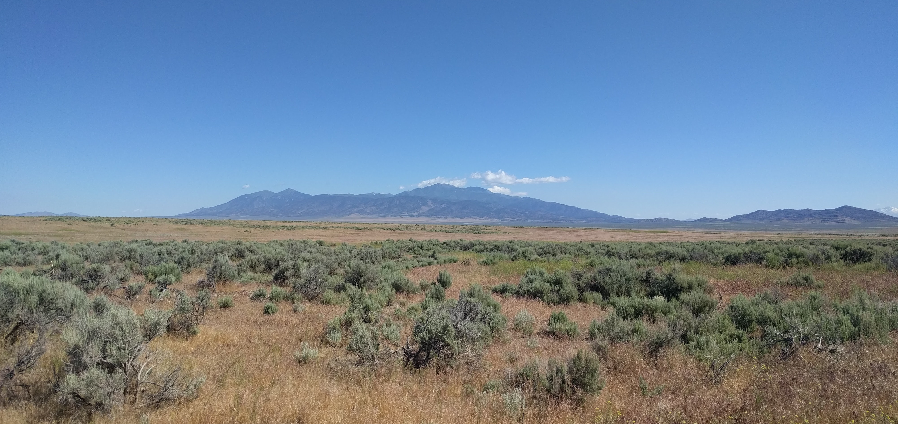

Publications
My latest publications can be found in my Google Scholar page. Please let me know if you would like a PDF of any articles.
Published
Ricks KD, Ricks NJ, & Yannarell AC (2023). Patterns of plant salinity adaptation depend on interactions with soil microbes. The American Naturalist. doi.org/10.1086/725393
Ricks KD & Yannarell AC (2023). Soil moisture incidentally selects for microbes that facilitate locally adaptive plant response. Proceedings of the Royal Society, B. doi.org/10.1098/rspb.2023.0469
Nettles R, Ricks KD, & Koide RT (2020). The dynamics of antibiotic-induced dysbiosis in interacting bacterial and fungal communities of the mouse colon. Microbial Ecology. doi.org/10.1007/s00248-020-01525-6
Ricks KD & Koide RT. (2019). The role of inoculum dispersal and plant species identity in the assembly of leaf endophytic fungal communities. PLOS ONE. https://doi.org/10.1371/journal.pone.0219832
Ricks KD & Koide RT (2019). Biotic filtering of endophytic fungal communities in Bromus tectorum. Oecologia. doi.org/10.1007/s00442-019-04388-y
Koide RT, Nguyen BT, Skinner RH, Dell CJ, Adler PR, Drohan PJ, Peoples MS, Licht M, Boyer M. Nettles R, Ricks KD, & Watkins J (2018). Comparing biochar application methods for switchgrass yield and C sequestration on contrasting marginal lands in Pennsylvania, USA. BioEnergy Research. doi.org/10.1007/s12155-018-9940-1
Koide RT, Ricks KD, & Davis ER (2017). Climate and dispersal influence the structure of leaf fungal endophyte communities of Quercus gambelii in the eastern Great Basin, USA. Fungal Ecology. doi.org/10.1016/j.funeco.2017.08.002
Koide RT, Watkins J, Ricks KD, … & Clark E (2017). Site and tree factors determining the distribution of Phellinus tremulae in Populus tremuloides in Utah, USA. Canadian Journal of Forest Research. doi.org/10.1139/cjfr-2017-0323
Nettles R, Watkins J, Ricks KD, … & Koide RT (2016). Influence of pesticide seed treatments on rhizosphere fungal and bacterial communities and leaf fungal endophyte communities in maize and soybean. Applied Soil Ecology. doi.org/10.1016/j.apsoil.2016.02.008
Szink I, Davis EL., Ricks KD, & Koide RT (2016). New evidence for broad trophic status of leaf endophytic fungi of Quercus gambelii. Fungal Ecology. doi.org/10.1016/j.funeco.2016.04.003
